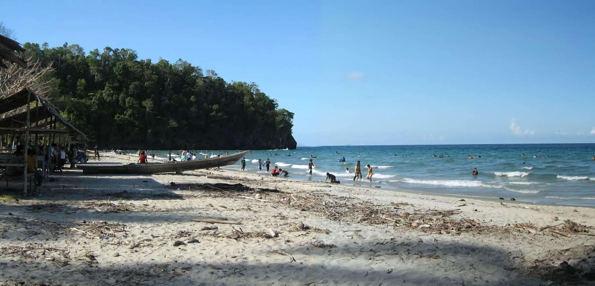

DESTINASI WISATA
Monumen Nosarara Nosabatutu
Monumen perdamaian yang melambangkan persatuan masyarakat Sulawesi Tengah, dengan pemandangan indah dari ketinggian.
Pantai Talise
Pantai ikonik di Kota Palu dengan pasir putih dan ombak tenang, cocok untuk bersantai, olahraga air, dan menikmati matahari terbenam.
Puncak Salena
Destinasi favorit untuk menikmati panorama Teluk Palu dari ketinggian, serta tempat populer untuk olahraga paralayang.

Pantai Taipa
Pantai dengan keindahan bawah laut yang mempesona, cocok untuk snorkeling dan menikmati panorama alam.
